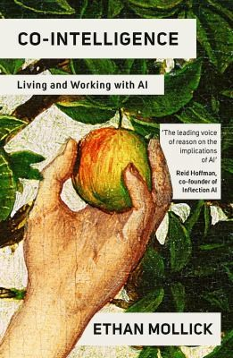
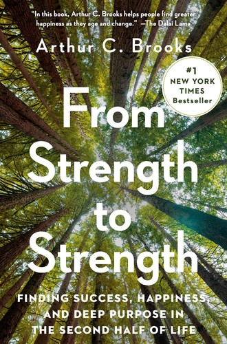
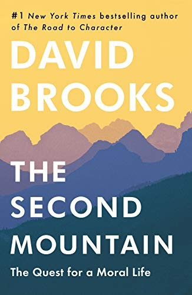
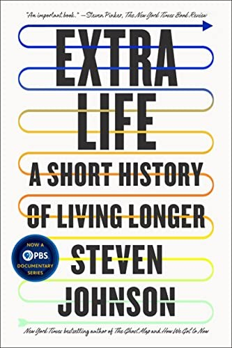
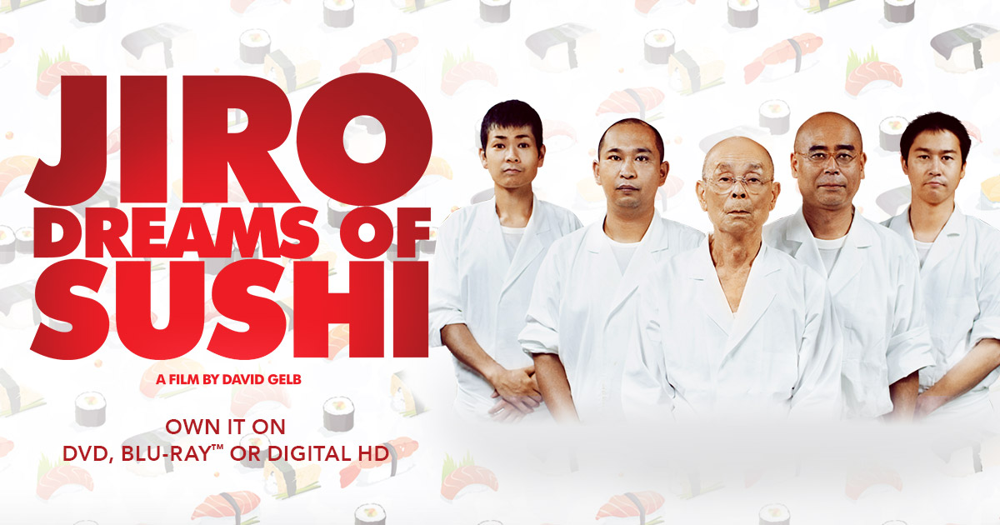
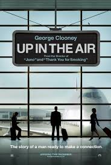

Serendipity: A Tactical Life
A memoir tracing an unconventional path from English Literature graduate to global CEO across four continents. The through line is how showing up with curiosity and willingness beats planning every time.
Writer. Podcaster. Strategic Advisor. Proving pivots are possible.
After 50 years building businesses, now building stories.
Photography by Griffin Rutherford
Fifty years building businesses across four continents. Graduated at 21 with an English Literature degree, became CEO of a design and manufacturing company by 23, spent decades in boardrooms from Texas to Hong Kong to El Salvador to the Netherlands — grew companies, managed global operations, navigated every kind of disruption the business world could produce.
Now 74 and based in Santa Fe, I am living my Third Phase in public.
I write, podcast with my son Griffin about the civilizational and personal shifts reshaping all of our lives, consult with organizations navigating AI and strategic crossroads, and pursue the creative work I never had time for when I was running things. Lifelong motorcyclist, developing artist, English Literature graduate who took a fifty year detour through global business and came out the other side with better stories.
This site is my hub — what I'm building, what I'm thinking about, what I'm reading and watching, and where you can find me.
A podcast and publishing platform exploring the civilizational and personal Third Phase we are all navigating. Co-hosted with my son Griffin Rutherford, it is the conversation between Phase One and Phase Three — a 24-year-old AI researcher and a 74-year-old former global CEO trying to make sense of a world being remade by artificial intelligence, economic disruption, and generational collision.
New episodes and essays launching now.
Visit Malestrum: The Third Phase →Strategic AI and business advisory for organizations in northern New Mexico. Co-founded with Griffin, Breakwater helps nonprofits, churches, small businesses, and mission-driven organizations cut through AI hype and make decisions that actually fit their situation. No implementation shortcuts. No vendor relationships. Honest counsel from people who have built and operated real things.
Visit Breakwater →Three books in progress, each at a different stage.
A memoir tracing an unconventional path from English Literature graduate to global CEO across four continents. The through line is how showing up with curiosity and willingness beats planning every time.
Fiction. More on this soon.
Essays on navigating the final productive decade with intention, purpose, and honesty. The book behind the podcast. Drawing on lived experience, current research, and the ongoing conversation with Griffin about what this civilizational moment actually means for all of us.
New essays published regularly on Malestrum: The Third Phase. Longer work in progress here.
Books, films, publications, and ideas feeding Malestrum: The Third Phase.

The most practical and humanistic book on working with AI. Mollick argues AI is not a tool you use occasionally but a colleague you work with continuously. Required reading for anyone navigating the Third Phase of civilization.
Read more →
The book I wish I'd had at 60. Brooks makes the research-backed case that crystallized intelligence — wisdom, pattern recognition, the ability to teach — peaks in your sixties and seventies. Phase Three isn't decline. It's a different kind of peak.
Read more →
Harari's civilizational history of information networks from the Stone Age to AI. Gives the Third Phase concept its historical weight. Every page makes the current moment feel both more understandable and more urgent.
Read more →
A philosophical examination of what happens when you reach the summit you've been climbing and find the view unsatisfying. The case for commitment, community, and other-centered living in the second half of life.
Read more →
How humans doubled their life expectancy in a single century — and what that means for the unprecedented Phase Three years most of us now have. The historical foundation for why this moment is genuinely new.
Read more →Essential for understanding what Griffin's generation is navigating and why the Gen Z conversation matters. Social media didn't just change communication — it rewired adolescent development.
Read more →Documentary on how social media platforms were designed to exploit human psychology. Essential viewing for understanding the civilizational Second Phase we're leaving behind.
Watch →
A meditation on mastery, dedication, and what it means to pursue excellence across an entire lifetime. Resonates differently at 74 than it did at 40.
Watch →
Corporate life, constant travel, and what we sacrifice for professional identity. Hits different when you've lived it across four continents for fifty years.
Watch →Jon Batiste documentary on creative ambition, love, and making something meaningful under pressure. Quietly one of the most inspiring things I've watched recently.
Watch →The real AI opportunity for people in their sixties and seventies isn't productivity. It's cognitive engagement, creative partnership, reduced isolation, and new career possibilities that didn't exist before. That's the story nobody is telling yet.
Gen Z's loneliness epidemic makes more sense when you realize they have no genuine third places — spaces between home and school or work where community happens organically. The civilizational cost of that loss is still being calculated.
As a lifelong rider watching the industry grapple with electrification, it feels familiar — like watching manufacturing shift from the US to Asia decades ago. The soul of the thing is being renegotiated in real time.
Is content created in collaboration with AI authentic? We think the honest answer is yes, if the human remains the author in every meaningful sense and the collaboration is disclosed. That's our working method and we think it matters to say so plainly.
Interested in a conversation about strategy, AI, writing, or the Third Phase?